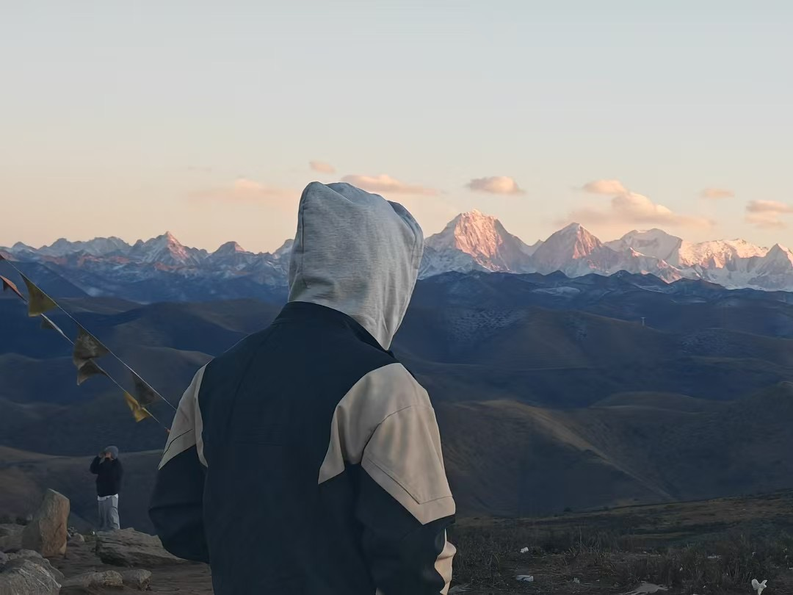
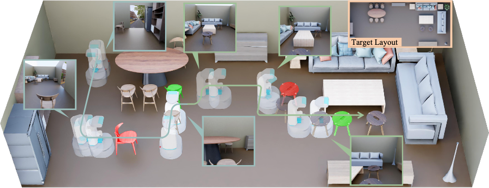

2026—Present
Ph.D. in Computer Science
Beijing Institute of Technology
School of Computer Science & Technology
Supervised by Prof. Wei Liang
Hello, I’m
Imagining worlds.
Making them possible.
I’m a first-year Ph.D. student in the School of Computer Science & Technology at Beijing Institute of Technology.
I’m a member of the Perception, Interaction, and Embodiment Lab, supervised by Prof. Wei Liang.
My research interests include 3D generation, human motion and Embodiment.

A different perspectiveImagine. Create. Interact. Explore.
Ph.D. in Computer Science
School of Computer Science & Technology
Supervised by Prof. Wei Liang
Master’s in Computer Science
School of Computer Science & Technology
Bachelor’s in Computer Science
School of Computer Science & Technology
Creating in three dimensions.
Understanding through interaction.
An ongoing exploration of the worlds we build and the intelligence within them.

RA-LIEEE Robotics and Automation Letters (RA-L), 2026 & International Conference on Robotics and Automation(ICRA), 2027.